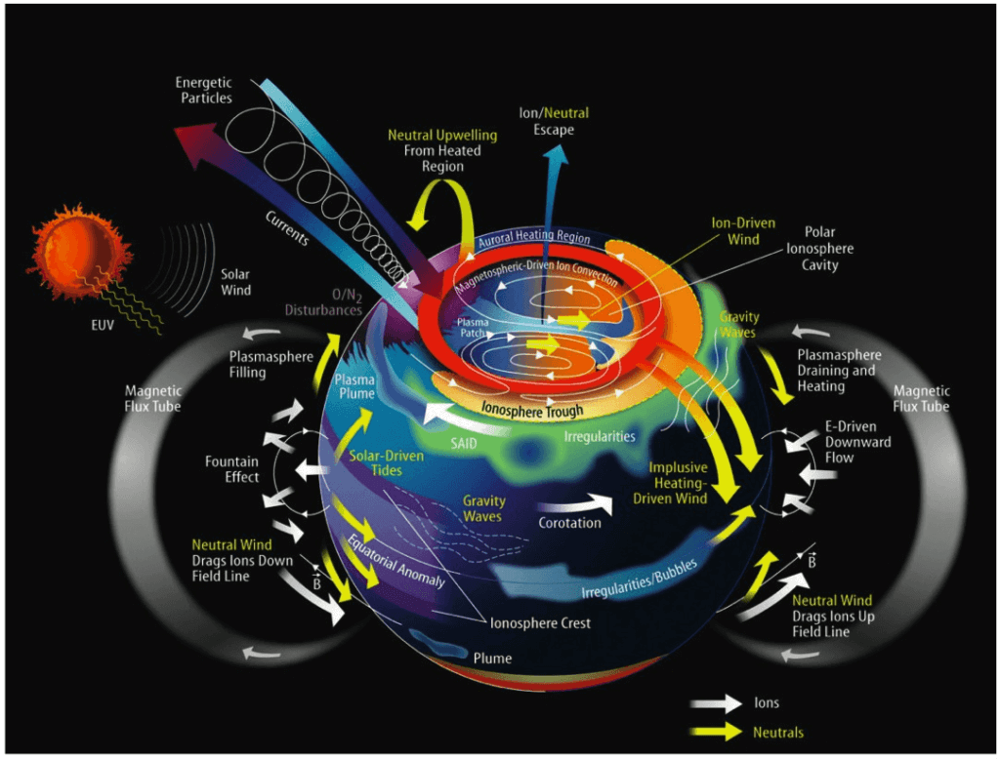

A Layman's Introdcution to Optical Aeronomy -
Exploring the Wonders of the Upper Atmosphere
Aeronomy is the study of the upper layers of the Earth's atmosphere, where fascinating interactions between sunlight,
particles from space, and atmospheric gases occur. These processes create breathtaking phenomena such as airglow, auroras,
and polar mesospheric clouds. To understand these, let’s first break down the structure of the atmosphere and the thermosphere,
and then explore how these layers interact.
The Atmosphere and Thermosphere
The Earth's atmosphere is divided into layers based on temperature changes:
Troposphere: Closest to the surface, where weather occurs.
Stratosphere: Contains the ozone layer, which absorbs harmful ultraviolet radiation.
Mesosphere: Where temperatures drop dramatically, and meteors burn up.
Thermosphere: Extending above the mesosphere, this layer sees temperatures soar due to the
absorption of solar radiation.
The thermosphere is where aeronomy focuses heavily, as it is the region where solar radiation interacts most intensely with
atmospheric gases, creating unique physical and chemical processes.
Atmosphere-Thermosphere Coupling
The atmosphere and thermosphere are connected through waves and energy exchange:

NASA’s Scientific Visualization Studio
Atmospheric Gravity Waves: These waves, generated by weather systems in the lower atmosphere,
propagate upward and dissipate energy in the thermosphere, affecting its temperature and density.
Radiation: Solar energy, especially ultraviolet (UV) and extreme UV radiation, heats the
thermosphere and ionizes its gases, creating the ionosphere, a region of charged particles.
Airglow: A Continuous Light Show
Airglow is the faint, colorful glow of the atmosphere caused by chemical reactions in the upper atmosphere.
It differs from the aurora because it occurs continuously and over the entire planet, not just near the poles.
Types of Airglow:
Dayglow: Happens during the day when sunlight excites atmospheric particles, causing them to release light.
Twilight Glow: Visible after sunset or before sunrise, as sunlight continues to interact with particles
high in the atmosphere.
Nightglow: Faint light seen at night, caused by chemical reactions from oxygen and nitrogen recombining
after being split by sunlight during the day.
Mesospheric vs. Thermospheric Airglow:
Mesospheric Airglow: Comes from the mesosphere and is often associated with hydroxyl (OH)
and oxygen (O₂) emissions. This airglow is utilized to study neutral dynamics in the upper atmosphere.
Thermospheric Airglow: Occurs in the thermosphere, involving ionized oxygen and nitrogen, and due to its location,
it is utilized to study plasma dynamics.
By NASA/Samantha Cristoforetti
Polar Mesospheric Clouds (Noctilucent Clouds)
Polar mesospheric clouds are rare, silvery-blue clouds that form in the mesosphere, the coldest part of the atmosphere.
They are made of ice crystals and are most visible during summer twilight near the poles.
They reflect sunlight from below the horizon, creating an ethereal glow.
NASA’s Goddard Space Flight Center/Joy Ng
Auroras: Dazzling Polar Lights
Auroras occur when charged particles from the Sun interact with Earth's magnetic field and collide with atmospheric
gases in the thermosphere. These collisions produce glowing lights, typically seen near the poles.
Types of Auroras:
Magnetic Substorms: Short-lived, localized auroras caused by brief bursts of energy in the magnetosphere.
They are often dynamic, with rapidly shifting patterns.
Magnetic Storm Auroras: Larger, more widespread auroras caused by intense solar activity, such as
coronal mass ejections (CMEs). These storms can last for hours or days and may be visible farther from the poles.
NASA
Electric Fantasies: Unveiling Sprites, Elves, and Haloes in the Sky
Atmospheric sprites, elves, halos, and blue jets are fascinating transient luminous events (TLEs) that occur high above thunderstorms,
in the mesosphere and lower thermosphere. These phenomena reveal the intricate connections between thunderstorms and the upper atmosphere, extending Earth's weather systems into space.
Types of TLEs:
Sprites: large, red or orange flashes shaped like jellyfish or columns, triggered by powerful lightning strikes.
Elves: short for Emissions of Light and Very Low-Frequency Perturbations due to Electromagnetic Pulse Sources,
Elves are rapidly expanding, faint rings of light that occur higher than sprites and are caused by electromagnetic pulses
from lightning.
Halos: diffuse, disk-shaped glows that often accompany sprites, forming from similar electrical activity.
Blue Jet: a type of transient luminous event that shoots upward from the tops of thunderstorms into the
stratosphere, appearing as a bright, cone-shaped burst of blue light caused by electrical discharges.